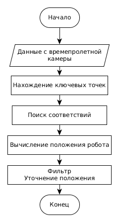
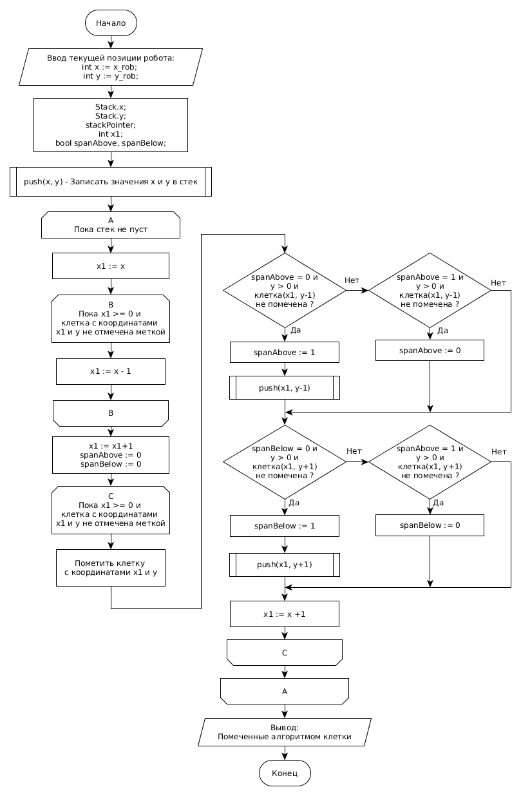

3 Алгоритмы навигации робота
В данном разделе работы рассмотрены алгоритмы разработанные для решения задачи навигации мобильного робота в неизвестной статической среде при автономном картографировании.
Сформулируем задачу навигации мобильного робота следующим образом.
Пусть неизвестная среда представляет собой помещение с плоским полом с неизвестным расположением стен. Внутри помещения находятся статичные препятствия, количество и положение которых неизвестны.
Пусть мобильный робот, оснащенный времепролетной камерой, расположен в помещении в исходной точке и не имеет в памяти данных об окружающей среде. С исходной точкой связана система координат. Положение мобильного робота в этой же системе координат определяется путем решения задачи SLAM.
Необходимо одновременно:
- строить 3D карту неизвестного помещения, в виде облака точек, и 2D карту помещения, в виде сетчатой карты занятости;
- определять положение робота на карте;
- планировать маршрут обхода помещения для картографирования;
- передвигать мобильный робот вдоль запланированного маршрута, избегая столкновения с препятствиями.
При решении задачи были приняты следующие допущения:
- в неизвестной среде находятся только статические препятствия, подвижных препятствий нет;
- мобильный робот можно описать габаритной окружностью;
- приводной уровень системы управления мобильного робота отрабатывает заданные линейную и угловую скорости его движения без ошибок, при передвижении колеса робота не проскальзывают.
Данная задача является комплексной, поэтому в работе она разбита на подзадачи. Для осуществления навигации робота было предложено реализовать следующую последовательность действий, приведенных на рисунке 12.

Рисунок 12 – Схема действий для осуществления навигации робота
Рассмотрим подробнее назначение каждого элемента предложенной схемы действий.
Находясь в исходной точке, а также при достижении очередной целевой точки робот картографирует неизвестную территорию непосредственно вокруг себя, путем выполнения разворота на месте на угол 360 градусов.
Данные с времепролетной камеры поступают на вход алгоритма SLAM. На основании результатов проведенного обзора (раздел 1 настоящей работы), для использования в схеме действий была выбрана реализация SLAM алгоритма RTAB-Map. RTAB-Map выполняет обработку данных с камеры, формирует 3D карту, выполняет локализацию робота на ней (см. пункт 3.1 раздела).
На следующем шаге выполняется перевод 3D карты в 2D граф (см. пункт 3.2 раздела). Такое преобразование требуется для выполнения следующих шагов, поскольку алгоритмы обхода графа, поиска пути и планирования траектории используют плоскую модель неизвестной среды.
Алгоритм обхода графа определяет очередную целевую точку, узел 2D графа, в который ему следует переместиться, чтобы исследовать неизвестную среду.
Координаты целевой точки поступают на вход алгоритма поиска пути к целевой точке, который строит кратчайший путь к целевой точке в виде последовательности узлов 2D графа. После чего робот, используя алгоритмы планирования траектории и формирования команд на движения, перемещается в координаты на карте, соответствующие целевой точке. Положение робота относительно карты на всём пути следования к целевой точке определяется с помощью визуальной одометрии вычисляемой алгоритмом RTAB-Map. Построение 3D карты и 2D графа происходит одновременно с исследованием неизвестной среды.
Далее робот циклически выполняет заданную последовательность действий, пока не останется новых целевых точек.
3.1 SLAM алгоритм RTAB-Map
Задача SLAM решается c помощью реализации RTAB-Map.
RTAB-Map "сшивает" облако точек, поступающее с времепролетной камеры
Kinect 2.0, в 3D карту. Это достигается за счет использования детектора
и дескриптора ключевых точек, а также детектора замыкания петель (см.
раздел 1 настоящей работы).
Работу SLAM алгоритма RTAB-Map можно представить как выполнение следующей последовательности действий:
- нахождение ключевых точек в пространстве;
- поиск соответствий между ключевыми точками;
- пересчет положения робота;
- уточнение положения ключевых точек на 3D карте.
Общая схема работы алгоритма RTAB-Map приведена на рисунке 13.

Рисунок 13 - Общая схема алгоритма RTAB-Map
Данный алгоритм является итеративным, то есть в каждый момент времени текущая оценка положения мобильного робота зависит от предыдущей. В основе алгоритмов такого типа лежит сопоставление двух последовательных снимков, при этом вычисляется смещение мобильного робота относительно предыдущего положения.
На первом шаге алгоритма на вход подаются данные с времепролетной
камеры. По этим данным в пространстве находятся ключевые точки и
определяются их описания, необходимые для поиска соответствий. В
процессе работы строится структура, которая хранит ключевые точки и их
описания. Затем для каждой обнаруженной ключевой точки ищется
соответствие в этой структуре. Если соответствие не найдено, то ключевая
точка просто добавляется в структуру. Если же было обнаружено
соответствие, то ключевая точка используется для вычисления положения
робота [14].
3.2 Алгоритм перевода 3D карты в 2D граф
Данный алгоритм подробнее рассмотрен в разделе 2 настоящей работы.
Для перевода 3D карты в 2D граф, необходимо спроецировать облако точек,
составляющее 3D карту, на плоскость, проходящую на уровне расположения
камеры перпендикулярно оси Z 3D карты.
Все объекты находящиеся ниже плоскости, считаются свободным участком.
Объекты, пересекающие плоскость и находящиеся выше неё считаются
препятствием. Шаг сетки графа, генерируемого RTAB-Map равен 0.05 м.
3.3 Алгоритм обхода 2D графа
Для обхода графа логично использовать алгоритм обхода графа в глубину []. Однако классический алгоритм обхода графа в глубину не применим для задачи обхода графа, представляющего собой сетчатую карту занятости, рассмотренную выше, поскольку не учитывает габариты робота, и предполагает, что робот занимает одну клетку графа. В действительности, разработанная робототехническая платформа занимает на графе область размером 12x12 клеток, при размере сетки графа 0,05 м.
Для решения задачи обхода графа была разработана модификация алгоритма обхода графа в глубину для сетчатой карты занятости, учитывающая габариты робота.
На каждой итерации алгоритма выполняется поиск целевого узла на 2D графе. Целевым узлом 2D графа является клетка на карте, в которой должен оказаться верхний левый угол робота при достижении роботом целевой точки. После достижения целевого узла робот разворачивается на месте на угол 360 градусов, чтобы сделать снимки окружающей среды с других ракурсов.
Общая схема работы алгоритма обхода 2D графа представлена на рисунке 14.

Рисунок 14 - Схема алгоритма обхода 2D графа
Рассмотрим подробнее каждый шаг работы алгоритма. Для примера, рассмотрим случай, когда робот занимает на графе область 2x2 клетки (см. рисунок 15).
На рисунке серым цветом обозначена неизвестная территория, черным - препятствия, белым свободные участки. Позиция робота отмечена красным квадратом.

Рисунок 15 - Алгоритм в процессе работы
На очередном вызове алгоритма обхода графа, после того как робот достиг целевого узла и развернулся на месте на 360 градусов, на вход алгоритма обхода графа поступает 2D граф и позиция робота относительно графа.
На первом этапе на графе выделяется квадратный участок вокруг позиции робота размером R x R клеток. В рассматриваемом случае R = 10.
На втором этапе в пределах этого участка выполняется поиск возможных смещений робота без рассчета, сможет ли робот попасть в это смещение учитывая габариты робота. На рисунке 15 возможные смещения робота обозначены зеленым и синим цветами (клетка помечается если в ней может оказаться левый верхний край робота, так чтобы положение робота не накладывалось на препятствие).
На третьем этапе выполняется поиск среди возможных смещений робота, достижимых с учётом габаритов робота. На рисунке 15 такие смещения отмечены зеленым цветом. Для этого используется алгоритм "построчный заливки с затравкой" (Scanline Floodfill Algorithm) [13]. Схема работы алгоритма приведена на рисунке 17.

Рисунок 17 - Схема работы построчного алгоритма заливки с затравкой
На четвертом этапе работы алгоритма обхода графа выполняется выбор смещения (выбор целевого узла) из полученного на предыдущем этапе набора возможных смещений. Выбор осуществляется с помощью модифицированного алгоритма обхода графа в глубину. Схема алгоритма представлена на рисунке 18.

Рисунок 18 - Упрощенная схема модифицированного алгоритма обхода графа в глубину
Текущая позиция робота и возможные смещения робота из текущей позиции при каждом срабатывании алгоритма записываются в стек.
Алгоритм обхода графа будет выдавать целевую узел графа для перемещения, пока счетчик целевых узлов не станет отрицательным, т.е. пока не останется неизвестных зон на 2D графе, имеющих общее ребро с узлом 2D графа, отмеченного как свободный участок. В исходной точке (исходном узле), счетчик целевых узлов имеет значение - ноль.
Алгоритм работы обхода 2D графа был протестирован на эталонной карте занятости. В результате работы алгоритма была получена карта совпадающая с эталонной, что подтверждает корректную работу алгоритма (см. рисунок 19).
Рисунок 19 - Эталонная карта занятости (слева) и карта, получаемая в результате работы алгоритма (справа)
3.4 Выводы по третьему разделу
Таким образом, в третьем разделе было рассмотрено решение задачи навигации мобильного робота в неизвестной статической среде при автономном картографировании и были получены следующие результаты:
1. Предложена последовательность действий для осуществеления навигации мобильного робота в неизвестной среде.
2. Разработан и протестирован алгоритм обхода 2D графа, задающий целевые точки на карте и позволяющий роботу автономно картографировать неизвестную среду.